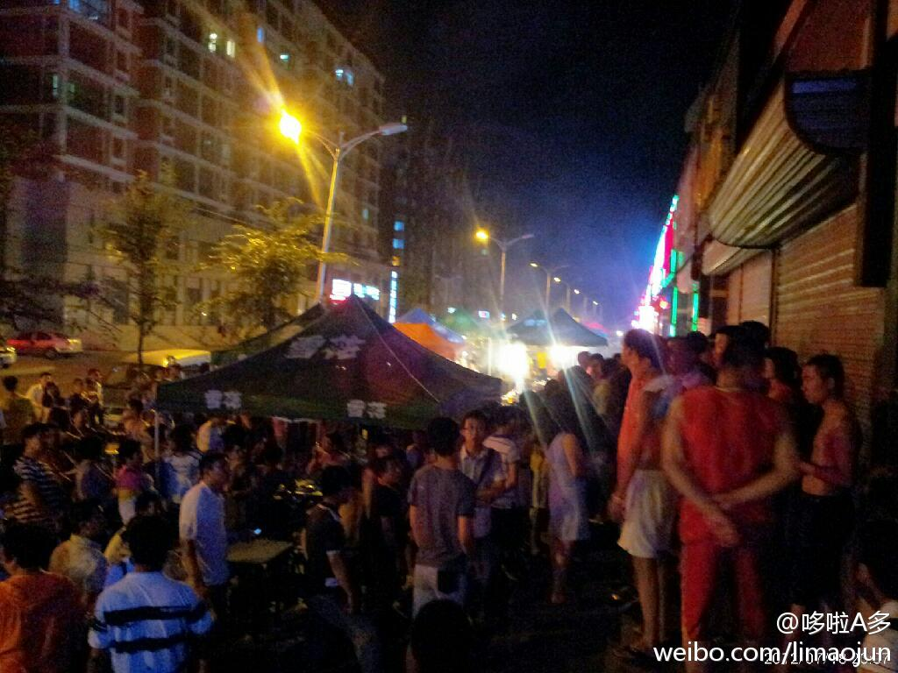
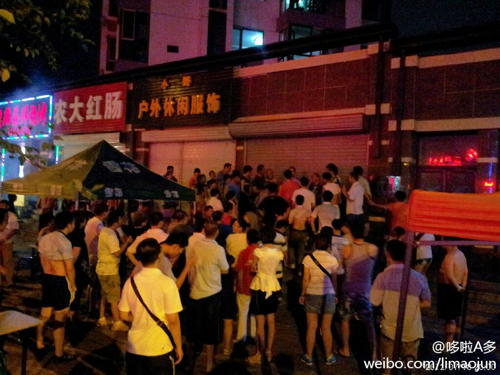
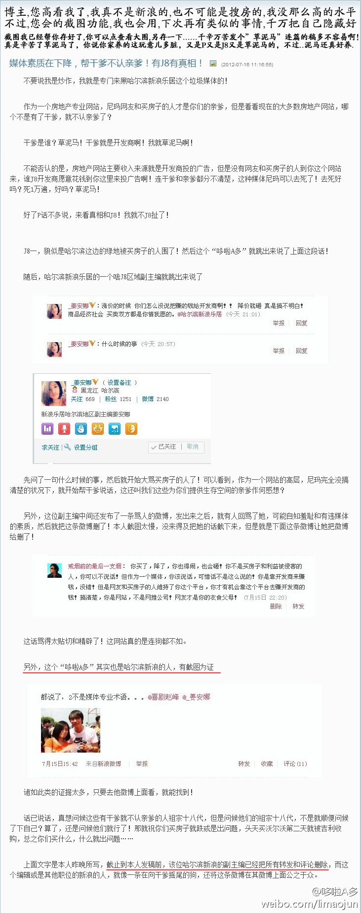
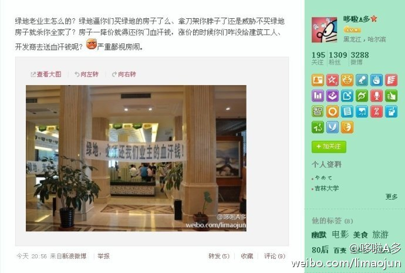

回复@_姜安娜:啥玩意来哈尔滨都白扯 近猪者笨 近墨者黑啊！指望他们出淤泥而不染？骚年，too young！ //@_姜安娜:所以说 房子前期卖出去了 但更重要的是后期的物业 配套服务。这也就是为什么大家都愿意买大品牌的原因，做完了一个项目，如果后期服务不好必然会影响巨大。@李多多:也不知道这事儿能不能谈妥，已经有人建议去省政府了，我地妈呀，可在家门口解决吧，香坊的事儿能在香坊解决就别去南岗给哈尔滨丢人了，立汇啊，辰能啊，我再求你一次，长点儿心吧，老百姓买个房子不容易，还要业主在楼下打口井以备天天停水麽？@哈尔滨新浪乐居 @_姜安娜 @raiclebaby @都市发现-佟勇
手边有个“普耐尔”MOMO9加强版的“平板电脑”，我滴妈呀，啥破玩意儿还没我手机快呢。。卡死了。卡死了。。。连让我用的冲动都没有。。。这玩意纯粹就是电子垃圾，根本就没有存在的必要，也不知道这种垃圾厂商是怎么生产出来这种垃圾产品的！国产数码产品一味追求低价的同时能考虑一下用户体验吗？
也不知道这事儿能不能谈妥，已经有人建议去省政府了，我地妈呀，可在家门口解决吧，香坊的事儿能在香坊解决就别去南岗给哈尔滨丢人了，立汇啊，辰能啊，我再求你一次，长点儿心吧，老百姓买个房子不容易，还要业主在楼下打口井以备天天停水麽？@哈尔滨新浪乐居 @_姜安娜 @raiclebaby @都市发现-佟勇
速速出现吧，相关负责人员，我真怕哪天又给道封上，苦逼的立汇美罗湾四期业主，我为你们祈祷，我为你们祝福！这个下雨天，你们辛苦了！立汇开发、辰能物业，你们可长点儿新吧，最新消息，警察来了，妈的抓贼的时候你们怎么没那么神速？？@哈尔滨新浪乐居 @Vermouth小苦 
2012年7月18日晚上8点，立汇美罗湾四期居民围攻物业管理处，原因即为每周都不定时停水，有的时候持续一整天，要我我也受不了，这大热天的！人越来越多，现在大概有100人了。@哈尔滨的今天 @哈尔滨新浪乐居 @新晚报 @_姜安娜 @都市发现-佟勇 @搜狐焦点哈尔滨 
北京最近提供2万多平方米住房，每平方米1600元至1900元。若买两居室，少说也要6万多元。一名大学生从参加工作起就日日节衣缩食，每月存储50元，已是极限，100年才能买上两居室。——人民日报1989年2月20日第2版
【数学学的不好的人】1、数学不好的人都比较爱笑，因为没有数学就没有烦恼。2、数学不好的人都比较天真浪漫，比较感性。3、数学不好的人都比较幽默，生活充满乐趣，感情和想象力都比较丰富4、数学不好的人都比较直爽，实在，不会拐弯抹角5.数学不好的人长的都比较漂亮.你的数学好吗？
回复@王鑫Mcrazy:最后知道真相的你眼泪掉下来？ //@王鑫Mcrazy:我终于明白真相了！原来赵峰就是哆啦A多啊！亏我关注他那么长时间！ //@哆啦A多:回复@米勒你個吃貨:你就承认了吧，要不别人该紧张了。 //@米勒你個吃貨:茂军一度认为是我，作为绿地业主和业内人士，我表示亚历山大。@李多多:听@米勒你個吃貨 说@少年知了 把微博和博客里的关于@_姜安娜 还有@哈尔滨新浪乐居 的信息全删除了，我对这种发了又删的行为表示谴责，一是我认为您不是真汉子，敢怒不敢言，既然说了还删除干嘛、二是觉得无理取闹的事儿让你做的很没水平，三是您的心理素质忒差。你以为特意注册个新ID就没人知道你了？ 
发表了博文 《既然媒体素质都下降了，你还在这造谣生事扰乱和谐社会建设？》 - 原文： 媒体素质在下降，帮干爹不认亲爹！有J8有真相！ 作者：少年知了 不要说我是炒作，我就是专门来黑哈尔滨新浪乐居这 网页链接 
回复@米勒你個吃貨:你就承认了吧，要不别人该紧张了。 //@米勒你個吃貨:茂军一度认为是我，作为绿地业主和业内人士，我表示亚历山大。@李多多:听@米勒你個吃貨 说@少年知了 把微博和博客里的关于@_姜安娜 还有@哈尔滨新浪乐居 的信息全删除了，我对这种发了又删的行为表示谴责，一是我认为您不是真汉子，敢怒不敢言，既然说了还删除干嘛、二是觉得无理取闹的事儿让你做的很没水平，三是您的心理素质忒差。你以为特意注册个新ID就没人知道你了？